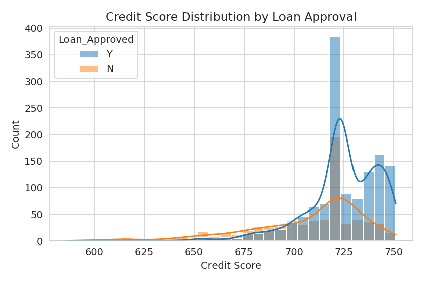
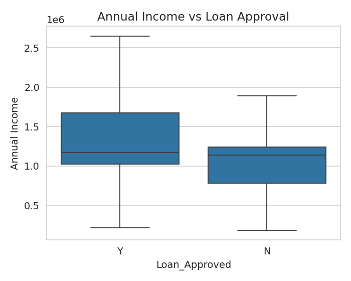
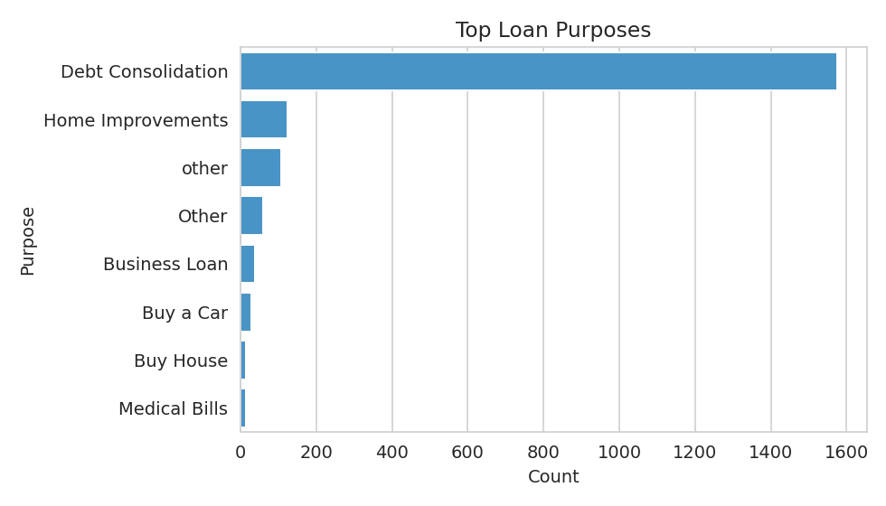
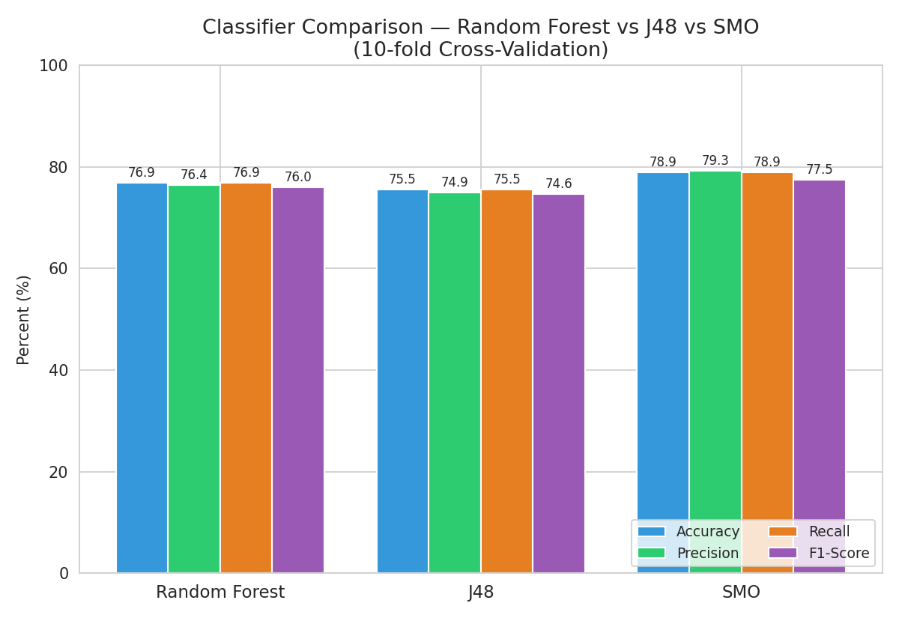
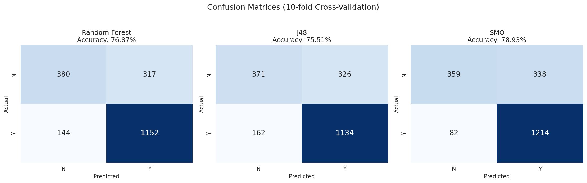

Loan Approval Prediction
Discover patterns. Compare models. Explain approvals.
This dashboard presents the completed Python preprocessing and WEKA analysis for 1,993 loan records using classification, association mining and clustering.
Classifier accuracy
What was performed?
Dataset & Preprocessing
The dataset was cleaned in Python before being prepared for WEKA. The cleaned CSV/ARFF files are included in the project package.
Preprocessing workflow
- LoadRead the loan dataset with pandas.
- CleanHandle missing values and prepare consistent categories.
- EncodePrepare categorical values for analysis.
- ExportSave cleaned CSV and ARFF files for WEKA.
- VisualizeGenerate target, credit-score, income and purpose charts.
Python preprocessing visuals




Classification Results
Three classifiers were evaluated using 10-fold cross-validation on 1,993 instances.
| Algorithm | Accuracy | Precision (weighted) | Recall (weighted) | F1 (weighted) | Kappa |
|---|---|---|---|---|---|
| SMO | 78.93% | 0.793 | 0.789 | 0.775 | 0.4937 |
| Random Forest | 76.87% | 0.764 | 0.769 | 0.760 | 0.4605 |
| J48 | 75.51% | 0.749 | 0.755 | 0.746 | 0.4307 |
Classifier comparison

Confusion matrices

Random Forest
Correct: 1,532 / 1,993
Matrix: 380 317 / 144 1152
SMO
Correct: 1,573 / 1,993
Matrix: 359 338 / 82 1214
J48
Correct: 1,505 / 1,993
Matrix: 371 326 / 162 1134
Apriori Results
Apriori was run on discretized attributes to discover combinations associated with loan approval.
Top association rules
These are descriptive association rules from the WEKA Apriori run; confidence indicates how often the consequent occurred within the rule's antecedent in this dataset.
K-Means Clustering Results
SimpleKMeans was run with 2 clusters using normalized attributes. Loan_Approved was ignored during clustering and used afterward for class-to-cluster evaluation.
Classes to clusters
.png)
Per-class / cluster breakdown
.png)
Cluster interpretation
1,130 records. The centroid shows mostly Short Term loans, Home Mortgage ownership, Debt Consolidation purpose and 10+ years in current job.
863 records. The centroid shows mostly Short Term loans, Rent ownership, Debt Consolidation purpose and less than 1 year in current job.
Loan Prediction Form
Use this simple browser demo to explain how applicant attributes can be passed through a classification workflow. The demo uses the extracted J48 decision-tree logic for a transparent prediction; it does not run WEKA inside the browser.
Enter applicant details
Click the button to run the demo.